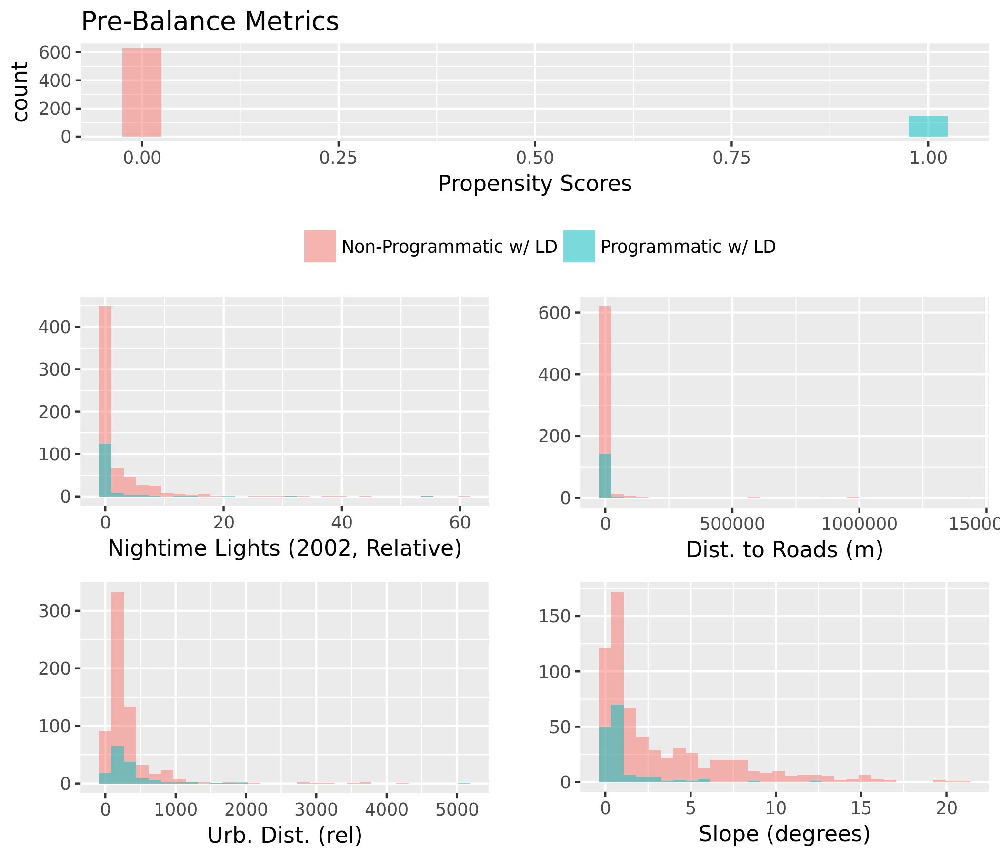
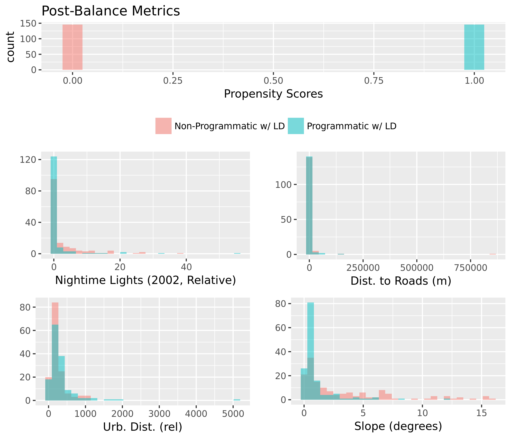

Figure 1. Mean Estimated Impacts from Causal Tree and Random Forest Estimation Strategies.
In this illustration, the blue vertical line is the global estimate of impact from the random forest.
The range of uncertainty is illustrated using a histogram, indicating the proportion of simulations which result in positive or negative estimates.
Specific confidence intervals can be calculated for this global estimate, or for individual project locations. A map of project location uncertainties is presented below.
Propensity Model: Programmatic w/ LD (Treated), Non-Programmatic w/ LD (Control) |
| Dependent variable: |
| |
| treatment |
|
| Dist. to Rivers (m) | 0.0000 (-0.07, 0.07) |
| Dist. to Roads (m) | 0.0001 (-0.37, 0.37) |
| Elevation (m) | 0.004 (-61.80, 61.81) |
| Slope (degrees) | 1.11 (-12,289.90, 12,292.12) |
| Urb. Dist. (rel) | -0.02 (-55.26, 55.23) |
| Pop. Density (2000) | 0.01 (-101.95, 101.97) |
| Protected Area % | 0.07 (-334.14, 334.27) |
| Treecover (2000, %) | -0.19 (-2,504.02, 2,503.65) |
| Latitude | 0.80 (-6,128.68, 6,130.28) |
| Longitude | -0.10 (-995.09, 994.88) |
| Max Precip. (2002, mm) | -0.001 (-1,020.33, 1,020.33) |
| Min Precip (2002, mm) | 0.16 (-3,286.38, 3,286.70) |
| Mean Precip (2002, mm) | -0.06 (-3,420.21, 3,420.09) |
| Max Temp (2002, C) | -4.38 (-40,579.93, 40,571.16) |
| Min Temp (2002, C) | -2.91 (-26,227.90, 26,222.08) |
| Mean Temp (2002, C) | 7.80 (-68,824.73, 68,840.33) |
| Nightime Lights (2002, Relative) | -0.88 (-18,987.60, 18,985.83) |
| NDVI (2002, Unitless) | -0.01 (-58.18, 58.17) |
| years since implementation | -33.76 (-36,152.34, 36,084.81) |
| gef phase 3 | 14.41 (-185,824.20, 185,853.00) |
| gef phase 4 | -36.65 (-132,198.90, 132,125.60) |
| Constant | 65.73 (-414,255.80, 414,387.30) |
|
| Observations | 777 |
| Akaike Inf. Crit. | 44.00 |
|
| Note: | *p<0.1; **p<0.05; ***p<0.01 |


Matched Model: Programmatic w/ LD (Treated), Non-Programmatic w/ LD (Control) |
| Dependent variable: |
| |
| 2013 Forest Cover (Sq. km) |
|
| treatment | 0.15 (-0.34, 0.64) |
| Dist. to Rivers (m) | 0.73 (-1.46, 2.93) |
| Dist. to Roads (m) | 0.05 (-0.05, 0.14) |
| Elevation (m) | 0.11 (-0.07, 0.30) |
| Slope (degrees) | -0.07 (-0.23, 0.09) |
| Urb. Dist. (rel) | -0.27*** (-0.42, -0.12) |
| Pop. Density (2000) | -0.11 (-0.26, 0.04) |
| Protected Area % | -0.09* (-0.20, 0.02) |
| Treecover (2000, %) | 0.58*** (0.35, 0.82) |
| Latitude | -0.27 (-0.62, 0.08) |
| Longitude | -0.20 (-0.47, 0.07) |
| Max Precip. (2002, mm) | -0.18 (-0.44, 0.07) |
| Min Precip (2002, mm) | -0.01 (-0.23, 0.22) |
| Mean Precip (2002, mm) | 0.37** (0.02, 0.72) |
| Max Temp (2002, C) | -0.30 (-0.87, 0.27) |
| Min Temp (2002, C) | -0.78** (-1.48, -0.07) |
| Mean Temp (2002, C) | 0.80 (-0.29, 1.89) |
| Nightime Lights (2002, Relative) | 0.16** (0.01, 0.30) |
| NDVI (2002, Unitless) | 0.002 (-0.14, 0.15) |
| years since implementation | -0.05 (-0.38, 0.28) |
| gef phase 3 | -0.03 (-0.27, 0.20) |
| gef phase 4 | 0.03 (-0.38, 0.43) |
| Urb. Dist. (rel) *Treatment | 0.23*** (0.09, 0.38) |
| Dist. to Rivers (m) *Treatment | 0.71 (-1.49, 2.91) |
| Pop. Density (2000) *Treatment | -0.05 (-0.15, 0.06) |
| Latitude *Treatment | -0.08 (-0.42, 0.26) |
| Longitude *Treatment | -0.06 (-0.33, 0.21) |
| Treecover (2000, %) *Treatment | 0.11 (-0.09, 0.30) |
| Max Temp (2002, C) *Treatment | 0.07 (-0.33, 0.46) |
| Mean Temp (2002, C) *Treatment | -0.13 (-0.67, 0.41) |
| Min Precip (2002, mm) *Treatment | 0.01 (-0.22, 0.25) |
| Constant | 0.12 (-0.18, 0.41) |
|
| Observations | 292 |
| R2 | 0.51 |
| Adjusted R2 | 0.45 |
|
| Note: | *p<0.1; **p<0.05; ***p<0.01 |